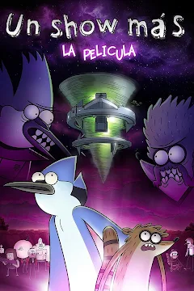
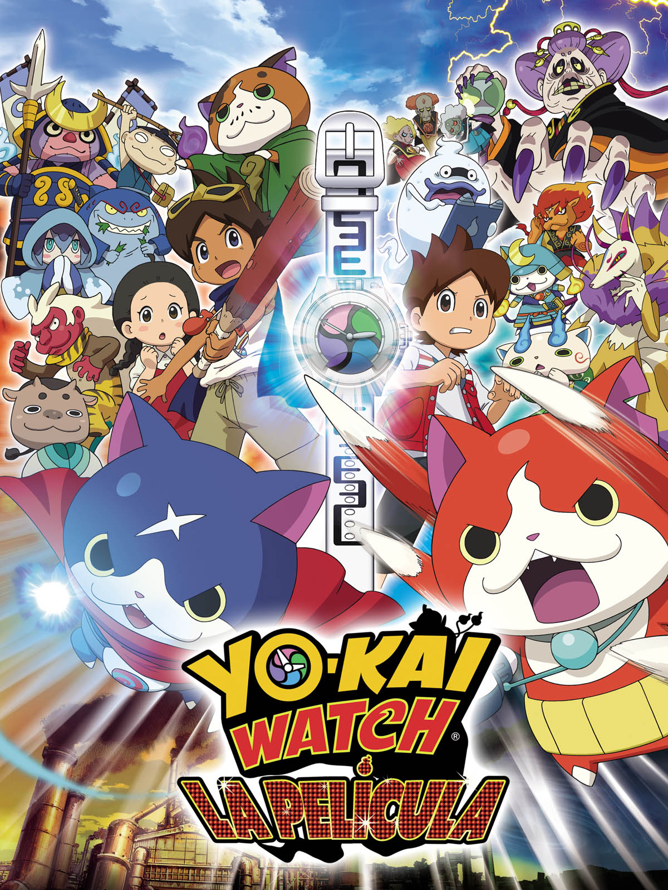

_Days_of_Summer.jpg)


Aqui você encontrara uma seleção dos melhores filmes de todos os tempos. Aproveite para conhecer e explorar os titulos que marcaram gerações, com suas histórias envolventes e atuações memoraveis.
| Filmes | imagem | Sinopse |
|---|---|---|
| 500 dias com ela | |
Tom Hansen (Joseph Gordon-Levitt) está em uma reunião com seu chefe, Vance (Clark Gregg), quando ele apresenta sua nova assistente, Summer Finn (Zooey Deschanel). Tom logo fica impressionado com sua beleza, o que faz com que tente, nas duas semanas seguintes, realizar algum tipo de contato. Sua grande chance surge quando seu melhor amigo o convida a ir em um karaokê, onde os colegas de trabalho costumam ir. Lá Tom encontra Summer. Eles também cantam e conversam sobre o amor, dando início a um relacionamento. |
| Apenas um show o filme |  | Mordecai e Rigby precisam voltar no tempo para derrotar um técnico de vôlei do mal e salvar o universo e sua amizade. |
| Forrest Gump | |
Quarenta anos da história dos Estados Unidos, vistos pelos olhos de Forrest Gump (Tom Hanks), um rapaz com QI abaixo da média e boas intenções. Por obra do acaso, ele consegue participar de momentos cruciais, como a Guerra do Vietnã e Watergate, mas continua pensando no seu amor de infância, Jenny Curran. |
| Gênio Indomavel | |
Em Boston, um jovem de 20 anos (Matt Damon) que já teve algumas passagens pela polícia e servente de uma universidade, revela-se um gênio em matemática e, por determinação legal, precisa fazer terapia, mas nada funciona, pois ele debocha de todos os analistas, até se identificar com um deles. |
| Godzila minus one | Godzilla: Minus One, filme do diretor e roteirista Takashi Yamazaki, se passa em um Japão social e economicamente devastado após o término da Segunda Guerra Mundial, na qual o país saiu perdendo. A situação chega a um nível ainda mais crítico quando uma gigantesca e misteriosa criatura surge do mar para assolar o país, o temível kaiju. Sob esse pano de fundo, sentindo-se como se tivesse enganado a morte muitas vezes, está Kōichi Shikishima (Ryunosuke Kamiki), um piloto Kamikaze. E quando seu grupo é atacado na Ilha Odo, com muitos engenheiros de aviões de guerra mortos pelo monstro gigantesco, uma enorme culpa pesa sobre Shikishima, agora sobrevivente. Entrando assim, em uma missão pessoal, para defender suas pessoas queridas e vingar a morte de seus companheiros, Shikishima se une a um grande grupo de veteranos de Guerra, para finalmente derrotar o monstro conhecido como Godzilla. | |
| Hajime no ippo:champion road | |
Ippo,Campeão dos Peso-Penas,se prepara para a sua primeira luta da qual defende o seu titulo e o cinturão de campeão. |
| Interestelar | |
Após ver a Terra consumindo boa parte de suas reservas naturais, um grupo de astronautas recebe a missão de verificar possíveis planetas para receberem a população mundial, possibilitando a continuação da espécie. Cooper (Matthew McConaughey) é chamado para liderar o grupo e aceita a missão sabendo que pode nunca mais ver os filhos. Ao lado de Brand (Anne Hathaway), Jenkins (Marlon Sanders) e Doyle (Wes Bentley), ele seguirá em busca de uma nova casa. Com o passar dos anos, sua filha Murph (Mackenzie Foy e Jessica Chastain) investirá numa própria jornada para também tentar salvar a população do planeta. |
| La la land | Ao chegar em Los Angeles o pianista de jazz Sebastian (Ryan Gosling) conhece a atriz iniciante Mia (Emma Stone) e os dois se apaixonam perdidamente. Em busca de oportunidades para suas carreiras na competitiva cidade, os jovens tentam fazer o relacionamento amoroso dar certo enquanto perseguem fama e sucesso. | |
| O pianista | O pianista polonês Wladyslaw Szpilman (Adrien Brody) interpretava peças clássicas em uma rádio de Varsóvia quando as primeiras bombas caíram sobre a cidade, em 1939. Com a invasão alemã e o início da 2ª Guerra Mundial, começaram também restrições aos judeus poloneses pelos nazistas. Inspirado nas memórias do pianista, o filme mostra o surgimento do Gueto de Varsóvia, quando os alemães construíram muros para encerrar os judeus em algumas áreas, e acompanha a perseguição que levou à captura e envio da família de Szpilman para os campos de concentração. Wladyslaw é o único que consegue fugir e é obrigado a se refugiar em prédios abandonados espalhados pela cidade, até que o pesadelo da guerra acabe. | |
| O poderoso chefão | |
Uma família mafiosa luta para estabelecer sua supremacia nos Estados Unidos depois da Segunda Guerra Mundial. Uma tentativa de assassinato deixa o chefão Vito Corleone incapacitado e força os filhos Michael e Sonny a assumir os negócios. |
| Perdido em Marte | |
O astronauta Mark Watney (Matt Damon) é enviado a uma missão em Marte. Após uma severa tempestade ele é dado como morto, abandonado pelos colegas e acorda sozinho no misterioso planeta com escassos suprimentos, sem saber como reencontrar os companheiros ou retornar à Terra. |
| Pokemon o filme:Hoopa e o duelo lendário | |
Enquanto o grupo faz uma viagem pela região de Kalos, Ash de repente se vê sendo transportado para outra cidade. Ele não demora a descobrir que o que aconteceu foi fruto do senso de humor de um pokémon brincalhão chamado Hoopa. Logo, Ash e seus amigos se veem participando de um confronto incrível envolvendo diversos pokémon lendários. |
| Sempre ao seu lado | |
Parker Wilson (Richard Gere) é um professor universitário que, ao retornar do trabalho, encontra na estação de trem um filhote de cachorro da raça akita, conhecido por sua lealdade. Sem ter como deixá-lo na estação, Parker o leva para casa mesmo sabendo que Cate (Joan Allen), sua esposa, é contra a presença de um cachorro. Aos poucos Parker se afeiçoa ao filhote, que tem o nome Hachi escrito na coleira, em japonês. Cate cede e aceita sua permanência. Hachi cresce e passa a acompanhar Parker até a estação de trem, retornando ao local no horário em que o professor está de volta. Até que um acontecimento inesperado altera sua vida. |
| Yokai watch |  | Sob o comando da sua mestra, Dame Dedtime, os malignos Yo-kai Kin, Gin e Bronzlow roubam o Yo-kai Watch de Nate Adams. Ela quer impedir que humanos e Yo-kai se tornem amigos, mas Nate recebe ajuda do Yo-kai Hovernyan, que leva Nate, Whisper e Jibanyan em uma jornada para 60 anos no passado, quando o Yo-kai Watch foi inventado pelo avô de Nate, ainda criança. Juntos, Nate e seu avô lutam contra Dame Dedtime e seu exército maligno. |
| Anônimo | Em Anônimo, Hutch Mansell (Bob Odenkirk) é um pacato pai e marido que sempre arca com as injustiças da vida, sem revidar. Quando dois ladrões invadem sua casa, Hutch se recusa a defender a si mesmo e sua família na esperança de evitar qualquer violência, desapontando seus familiares com sua passividade. As consequências do incidente acabam despertando uma raiva latente em Hutch, desencadeando instintos adormecidos e impulsionando-o em um caminho brutal que irá trazer à tona segredos sombrios e habilidades letais. | |
| Shin Godzila | |
Um acidente desconhecido ocorre na Aqua-Line da Baía de Tóquio e um gabinete de emergência se reúne. De repente, uma criatura gigante aparece imediatamente, destruindo cidade atrás de cidade - e com rumo em direção à Tóquio. |